공시 비교 · 동의 배너 · 항공권 CTA
요청한 순서대로 1 → 2 → 3을 적용했습니다. 각 단계 직전과 직후를 동일한 브라우저 크기로 촬영했습니다. 아래 이미지를 누르면 원본 크기로 열립니다.
1. 9개 항공사의 전월 대비 표기 통일
셀 본문은 ▲ 8.0% 같은 방향·수치만 보여줍니다. 모든 항공사가 같은 landingComparison() 데이터와 landingComparisonHtml() 렌더링 경로를 사용합니다. ⓘ에는 비교 기간·구간·원통화 금액쌍·산식·최소값의 뜻·보관 기록 여부를 모았습니다.
BX·ZE 원인: 데이터 필드 누락이 아니었습니다. 기존 공통 템플릿이 comparison.archived가 참일 때만 꼬리표를 표시했습니다. 이 값은 비교쌍 중 원문 검증을 통과하지 않은 저장 기록이 있는지로 산출됩니다. BX 4쌍과 ZE 6쌍은 모두 검증되어 값이 거짓이었고, 다른 7개사는 저장 기록을 포함했습니다. 새 툴팁은 ‘있음/없음’을 명시해 출처 차이를 정확히 보존합니다.
| 항공사 | 셀 표기 | 비교쌍 | 보관 기록 포함 쌍 |
|---|---|---|---|
| KE | ▲ 8.0% | 9 | 1 |
| OZ | ▲ 15.9% | 9 | 9 |
| 7C | ▲ 14.9% | 6 | 6 |
| LJ | ▲ 12.5% | 5 | 5 |
| RS | ▲ 12.7% | 5 | 5 |
| BX | ▲ 15.4% | 4 | 0 |
| TW | ▲ 15.3% | 6 | 6 |
| ZE | ▲ 14.9% | 6 | 0 |
| YP | ▲ 17.1% | 6 | 6 |
키보드 포커스·마우스·터치로 열림, Escape로 닫힘, PageUp/Down·방향키로 긴 설명 스크롤. 마우스를 설명창으로 옮길 때 닫히던 간격 문제도 수정했습니다.
변경 파일
- public/home-platform.js — 공통 수치 표기와 6언어 설명
- public/home-interface.js — 포커스·포인터·키보드·화면 경계 처리
- public/home.css — 수치 셀과 툴팁 스타일
- public/index.html — 검색엔진용 정적 공시 스냅샷
- scripts/sync_static_snapshots.cjs — 공시 안내 버튼을 포함한 스냅샷 유지
- tests/calculator.test.cjs, scripts/verify_platform.cjs, scripts/verify_locale_period.cjs, scripts/verify_main_improvements.cjs — 변경된 표기·접근성·원본 데이터 검사
데스크톱 — 9개 행 전체

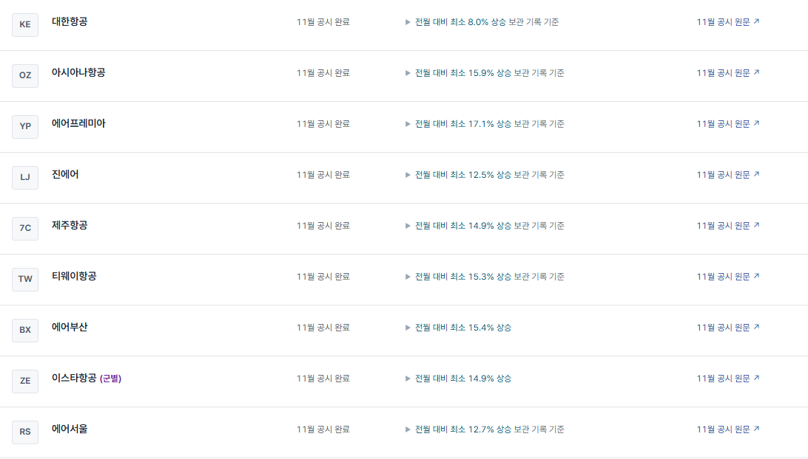

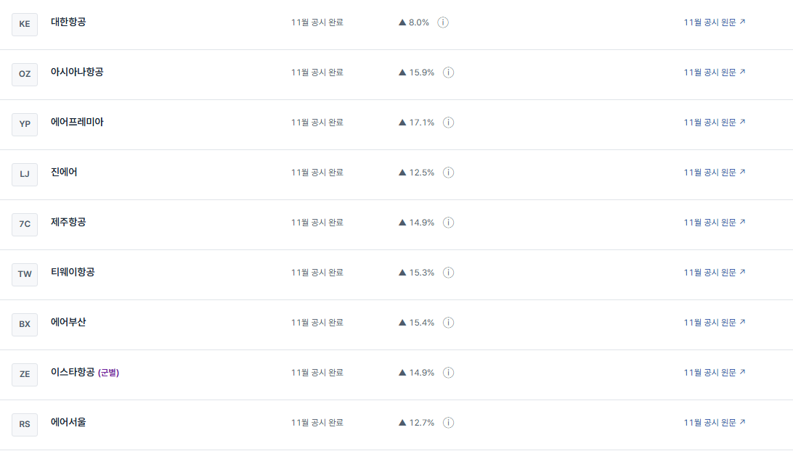


모바일 375px — 9개 행 전체

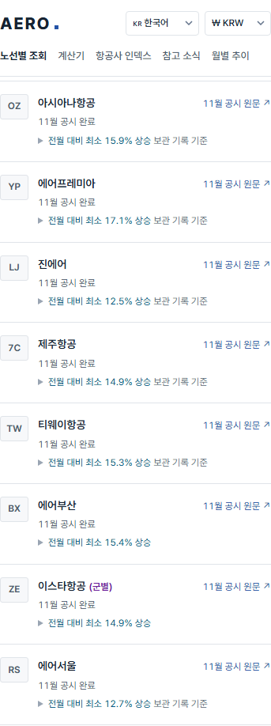

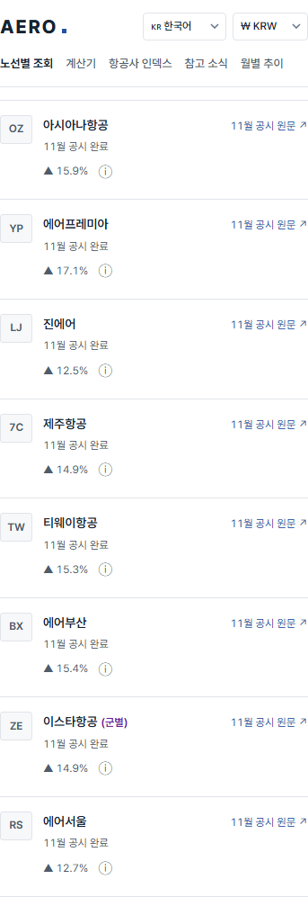


2. 높이 53px의 하단 동의 바
첫 화면에는 짧은 설명·설정·모두 거부만 표시합니다. 설정에서 기존 분석/광고 선택과 ‘선택 저장’을 사용합니다. 설정창을 열거나 닫기만 해서는 동의가 저장되지 않습니다. 6개 언어 모두 두 화면 크기에서 바 높이 53px과 가로 넘침 없음을 확인했습니다.
첫 3행이 화면 안에 들어오도록 홈의 상단·표 간격도 함께 줄였습니다. 모바일에서는 반복되는 소개 문장 두 개를 숨기고 공시 상태와 변동률을 같은 줄에 배치했습니다. 검색 입력·버튼 높이는 유지했습니다.
| 검사 화면 | 검색창 하단 | 3번째 행 하단 | 바 시작 위치 | 행과 바 여유 |
|---|---|---|---|---|
| 1366 × 768 | 320.1px | 701.0px | 715px | 14.0px |
| 375 × 812 | 318.1px | 724.7px | 759px | 34.3px |
동의 전 분석·광고 로더 요청 0건. 분석만 동의하면 GA4·Clarity, 광고만 동의하면 광고 로더만 요청. 반복 저장으로 로더가 중복되지 않습니다.
변경 파일
- public/_analytics.js — 하단 바·상세 dialog·6언어·초점 관리, 기존 동의 로직 유지
- public/home.css — 첫 3행을 위한 홈 간격 조정
- scripts/verify_analytics_privacy.cjs — UI·저장·만료·다른 탭·요청 관측 회귀
- scripts/capture_main_improvements.cjs — 지정 화면 촬영 및 겹침 좌표 검사
- docs/platform-analytics.md — 새 설정 UI 설명
데스크톱 — 첫 화면, 동의 전

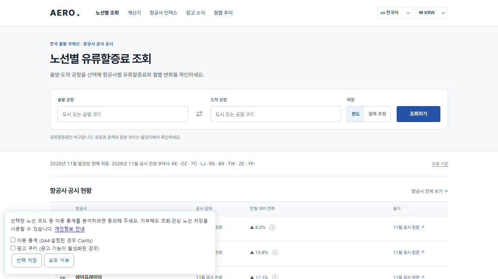

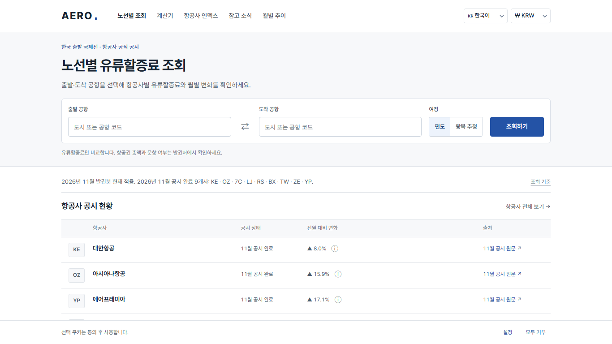
모바일 — 첫 화면, 동의 전

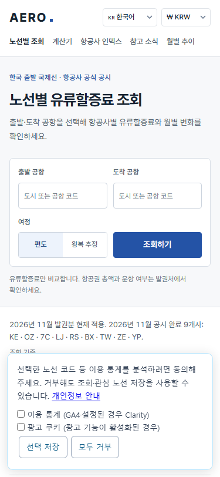

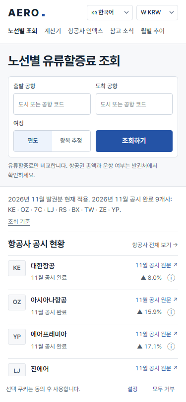
좌표 증거: 데스크톱 · 모바일 / 동의·네트워크 관측 결과
3. 조회 결과와 12월 전망 하단의 항공권 총액 CTA
조회 결과에는 기존 링크가 남아 있었지만 일반 텍스트 링크처럼 표시되어 눈에 띄지 않았습니다. 이를 명확한 버튼으로 바꿨습니다. 전망 페이지에서는 본문 중간에 있던 CTA를 main의 마지막 구역으로 이동했습니다. 두 위치 모두 ‘유류할증료 포함 실제 항공권 총액 비교하기’ 의미를 6개 언어로 제공합니다.
| 위치 | 기존 링크 보존 | 새 이벤트 정보 |
|---|---|---|
| 노선 조회 결과 하단 | https://lase.kr/click.php?m=myrealtrip&a=A100704170&l=0000 | placement=route_result + 실제 조회 결과의 출발·도착 코드·여정 |
| 12월 전망 main 맨 아래 | https://linkmoa.kr/click.php?m=myrealtrip&a=A100704170&l=0000 | placement=forecast_bottom / 임의 노선 없음 |
기존 affiliate_click을 유지하고, 표시된 두 항공권 링크에만 cta_fare_compare를 추가했습니다. 분석 동의가 있어야 클릭당 한 번 발생합니다. 거부·광고만 동의·동의 철회 상태에서는 발생하지 않으며, 나중에 동의해도 이전 클릭을 재전송하지 않습니다. 호텔·SIM 링크에는 새 이벤트를 보내지 않습니다.
외부 제휴 링크가 공항 사전 선택 파라미터를 지원한다는 계약은 확인되지 않았습니다. 링크에 임의 파라미터를 추가하지 않았습니다. 출발·도착 코드는 분석 동의 시 이벤트에 전달하며, 검색 후 입력창을 수정해도 실제 조회 결과의 공항을 사용합니다.
변경 파일
- public/index.html — 결과 하단 CTA 번역 키와 이벤트 표식
- public/home.css — 항공권 버튼과 모바일 배치
- public/forecast.html — CTA 본문 최하단 이동·스타일·표식
- public/fare-compare-copy.js — 두 페이지가 공유하는 6언어 제목·설명·버튼
- public/_analytics.js — 동의 검사를 거치는 새 이벤트·조회 공항 코드
- scripts/verify_main_improvements.cjs, scripts/verify_nov12.cjs — CTA·언어·기존 전망 데이터 회귀
- docs/platform-analytics.md — 이벤트 정의 및 검증 범위
노선 조회 결과 — 데스크톱

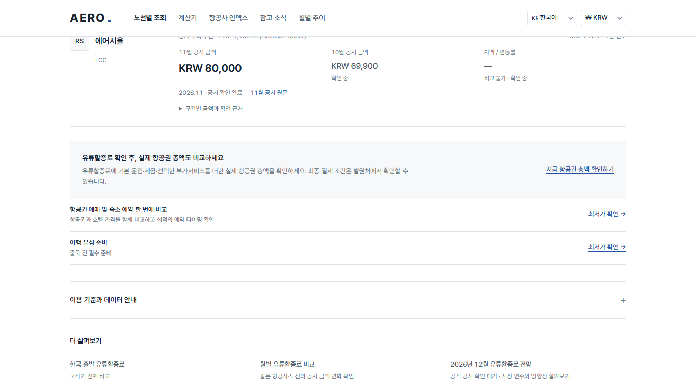

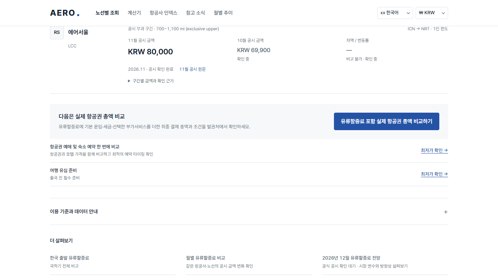
노선 조회 결과 — 모바일

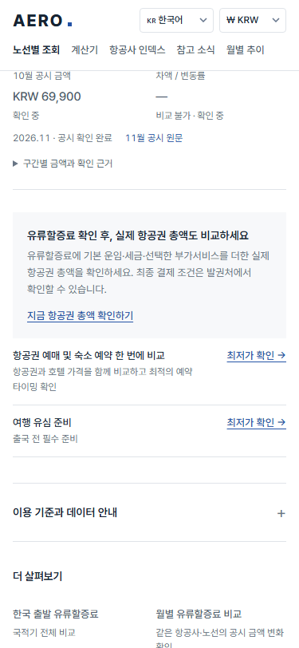

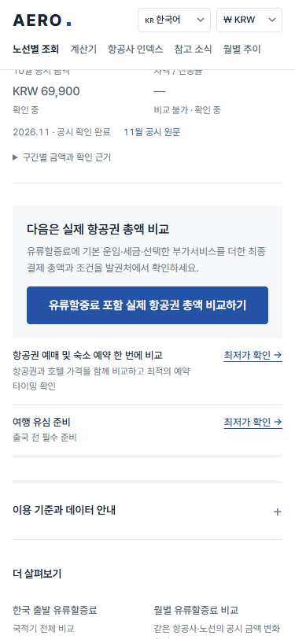
12월 전망 — 데스크톱

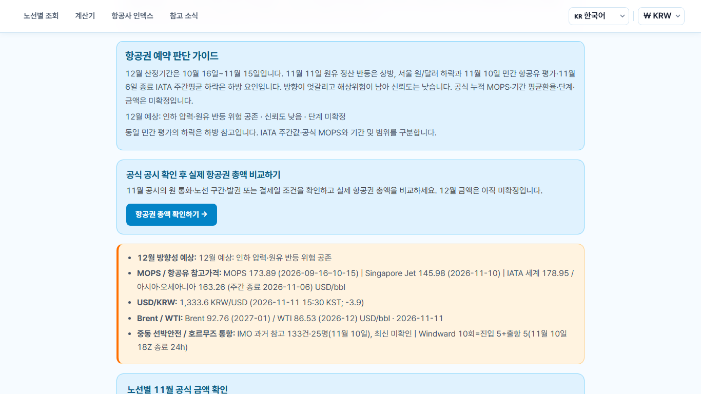

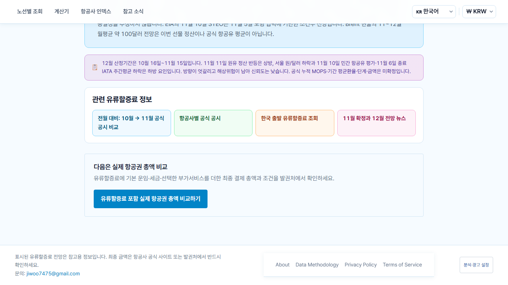
12월 전망 — 모바일

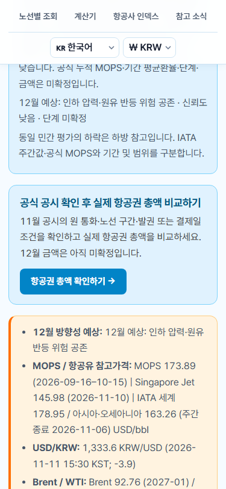

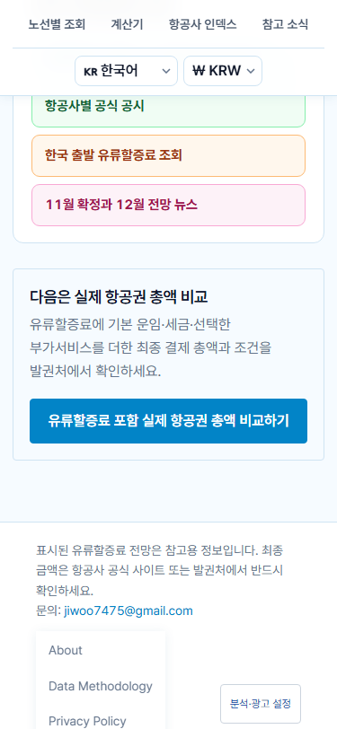
검증과 범위 밖의 남은 사항
| 검증 | 결과와 범위 |
|---|---|
| 공시·툴팁 | 6언어 × 9항공사 × 1366/375/320px. 공시 객체·비교쌍·출처 URL을 작업 전 JSON과 대조. 키보드·hover·스크롤·팝업 경계 검사. |
| 동의·네트워크 | 6언어 × 1366/375px. 53px 바, 상세 dialog, 초점, 저장/거절, 만료, 다른 탭 변경, 저장소 차단. 동의별 GA4/Clarity/광고 요청 관측. |
| 항공권 CTA | 2페이지 × 6언어 × 1366/375/320px. 기존 URL·파라미터, 클릭당 이벤트 수, 동의 철회, 실제 조회 공항, 호텔/SIM 제외. |
| 기존 기능 | 9페이지 데스크톱/모바일, 메타데이터·JSON-LD·검색·분석·제휴 검사. 계산·광고 로더 단위검사 16개. 전망·뉴스 각각 6언어의 데이터·기준 시각·스키마·12초 안정성과 그래프 표시 검사 통과. |
| 공유 데이터 | 11월 공시 9개, 비교쌍 56개 및 원문 링크 보존. 서비스 데이터 검증 통과. 미공시 null을 0으로 바꾸지 않음. |
| 문법·정적 화면 | JavaScript 78개와 JSON-LD 7개 구문 검사. index/forecast 정적 스냅샷 일치. 홈의 6언어 기간 경계·통화 변경 검사. |
공시·툴팁 검사 로그 · CTA 검사 로그 · 최종 동의 회귀 로그 · 동의 요청 관측 JSON · 9페이지 회귀 결과 · 데이터 검증 결과 · 배포 준비 검사 · 스크린샷 재현 스크립트
범위 밖 표시 문제: 기존 전망의 독일어 제목 Schifffahrtssicherheitsindikatoren가 320px 화면에서 오른쪽으로 약 4px 넘칩니다. CTA 버튼 자체 및 요청한 375px·1366px 화면은 넘치지 않습니다. 기존 제목 스타일은 수정하지 않았습니다.
- 운영 GA4 수신: 브라우저의 동의 조건과
gtag이벤트 발생은 검증했습니다. 외부 전송을 차단했으므로 GA4 계정 DebugView 수신·제휴 구매 전환을 확인한 것은 아닙니다. - 배포 검사: 변경한
_analytics.js가 기존 운영 검토 보호 범위에 있어 현재 배포 준비 검사는 통과하지 않습니다. 배포 전에 변경 범위의 검토 근거와 scopeDigest가 필요합니다. 승인 기록·기준 해시는 임의 변경하지 않았습니다. - 기존 동의 철회 한계: 이후의 자체 이벤트 전송은 중지됩니다. 이미 로드된 외부 SDK의 완전한 종료에는 기존 안내처럼 새로고침이 필요합니다.
- 기존 데이터 경고: 일부 공시의 발표일·정확한 시작/종료일 누락, 과거 수동 데이터 형식 경고, 일부 10월 비교 원문 재검증 필요 상태는 보존했습니다. 이번 변경에서 데이터를 추정하거나 수정하지 않았습니다.
기존에 진행 중이던 항공사·그래프·뉴스 디자인 수정은 이번 3개 항목의 변경 목록과 구분했습니다. 이 작업은 로컬 코드와 검토 자료 작성까지이며 배포·커밋은 수행하지 않았습니다.